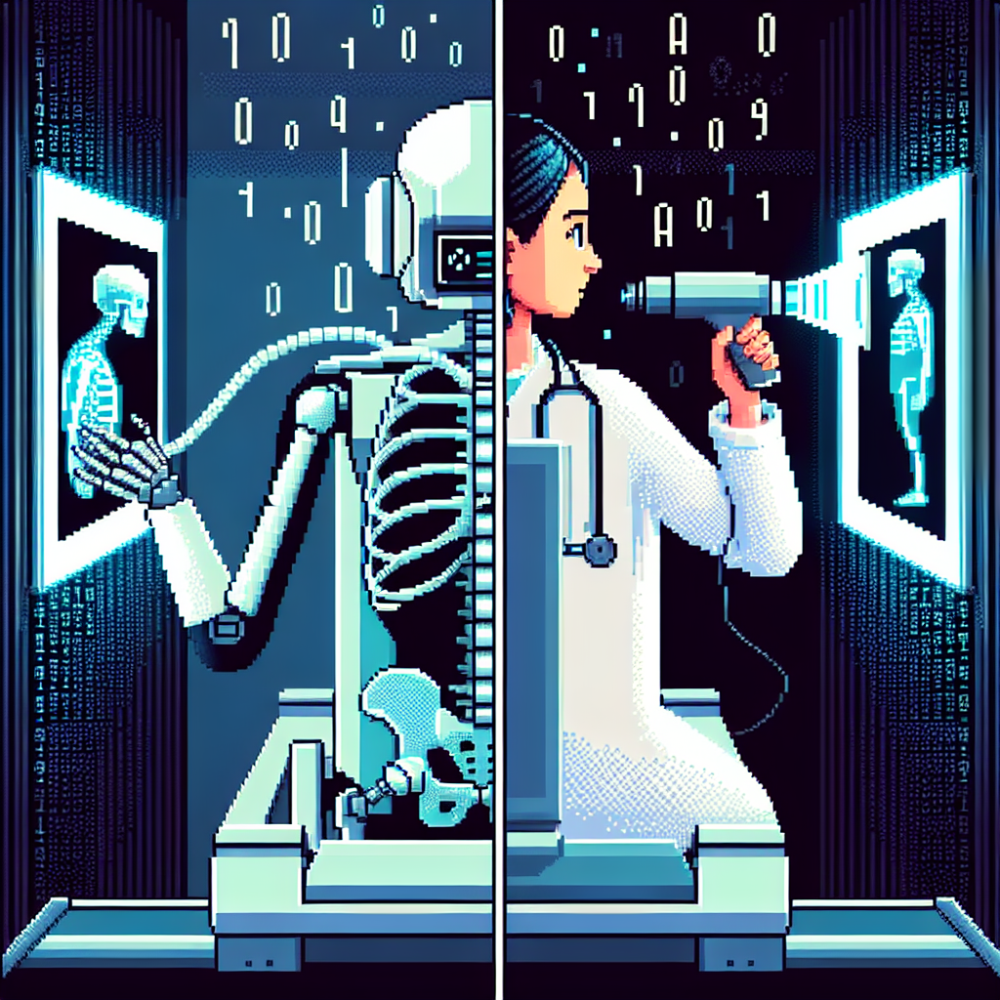

Why AI will never replace the radiologist
In recent years, there has been a lot of buzz surrounding the potential of artificial intelligence (AI) to revolutionize various industries, including healthcare. One area that has received a lot of attention is the use of AI in radiology, with some experts suggesting that AI could eventually replace radiologists altogether.
While AI certainly has the potential to assist radiologists in their work, I believe that it will never fully replace them. Radiology is a complex field that requires not only technical expertise but also a deep understanding of human anatomy and physiology. While AI can certainly help with tasks such as image analysis and pattern recognition, it lacks the human touch and intuition that radiologists bring to their work.
Furthermore, AI is not infallible. Like any technology, it is prone to errors and biases, which can have serious consequences in a field as critical as radiology. Radiologists are trained to interpret images in the context of a patient's medical history and symptoms, something that AI simply cannot do.
In conclusion, while AI certainly has the potential to revolutionize the field of radiology, I believe that it will never fully replace the expertise and experience of human radiologists. Instead, I see AI as a valuable tool that can assist radiologists in their work, helping them to provide more accurate and efficient care to their patients.